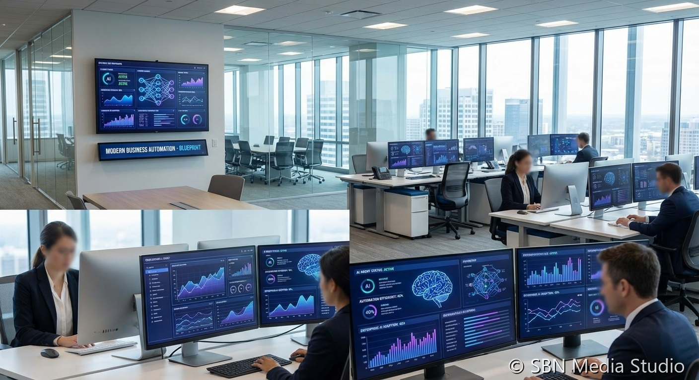

ServiceNow Bets on AI Control Tower for Agent Sprawl

LAS VEGAS, JUNE 1, 2026. At Knowledge 2026, ServiceNow expanded its AI Control Tower with a new Discover layer and 30 new enterprise integrations spanning AWS, Azure, Google Cloud, SAP, Oracle, and Workday, pitching the product as the governance plane for AI agents that enterprise customers are already deploying across competing vendor stacks.
The expansion, detailed in ServiceNow's newsroom and reporting from Fortune and VentureBeat, is the clearest sign yet that the enterprise agent market is entering a control-plane phase rather than a model-selection phase. Discover layers automated inventory across every system in an enterprise to surface agents the central IT team did not know existed — Salesforce Agentforce instances stood up by a sales team, Microsoft Agent 365 workflows configured in a finance unit, Claude Code subagents wired into a developer's IDE. Control Tower then adds the observability, governance, security, and measurement layer on top, treating those agents like any other audited enterprise workload.
The mechanism is what makes the pitch land with CIOs. ServiceNow already sits on the workflow plumbing — ITSM, HR Service Delivery, Customer Service Management — that connects every department's agent deployments back to identity, change-control, and audit. The 30 new integrations announced at Knowledge mean Control Tower can now pull telemetry directly from the rival agent platforms it competes with, including Salesforce Agentforce Coworker (in beta), Microsoft Agent 365 (recently GA), and Perplexity's 'Computer' enterprise tier, which VentureBeat reports is now being marketed directly at the enterprise. ServiceNow is essentially positioning itself as Switzerland: not the agent vendor a customer picks, but the layer that governs whichever agent vendors a customer has accumulated.
The consequences map cleanly to where enterprise AI budgets are flowing. A May 2026 Informatica/Salesforce survey, cited by ServiceNow at the keynote, found 89% of data and analytics leaders expect agent interoperability to become a required capability inside the next budget cycle — up from a much smaller share a year ago. That number is the consequence of the agent sprawl problem becoming real: enterprises now have agents from three to five vendors simultaneously, often deployed by different business units, and there is no single inventory, identity model, or audit trail across them. ServiceNow is selling exactly that missing layer. Competitors will counter, with Salesforce, Microsoft, and Oracle each likely to argue their own platform is the right control plane, but ServiceNow's neutrality claim is structurally stronger because it does not also sell a frontier agent platform.
The takeaway is that the next phase of enterprise AI buying will be less about choosing a single agent vendor and more about choosing a governance vendor that works across many. Microsoft, Salesforce, Anthropic, and Perplexity will keep competing for the agent workloads themselves. ServiceNow is making a bet, with concrete product depth behind it, that none of them will dominate enough to make a separate control plane unnecessary. Through the back half of 2026, Control Tower attach rates will be the metric to watch — not just at ServiceNow but as a leading indicator of how mature enterprise agent deployments have actually become.
Sources
ServiceNow Newsroom, Fortune, VentureBeat